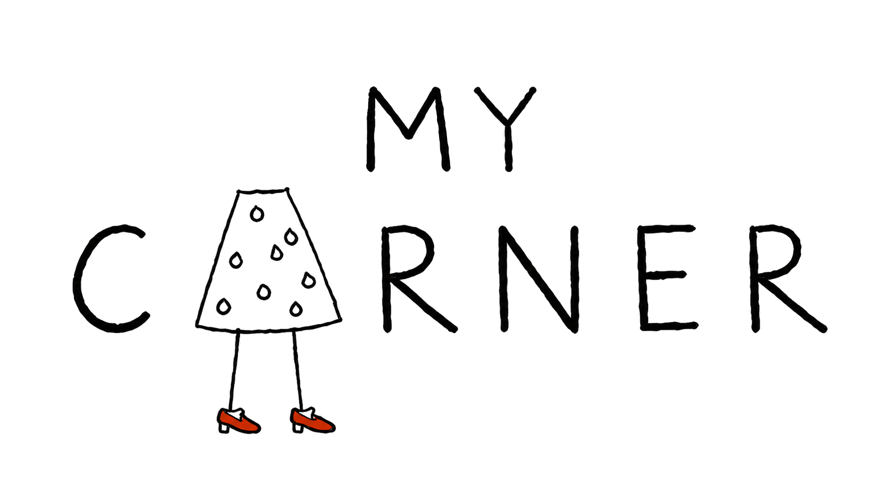
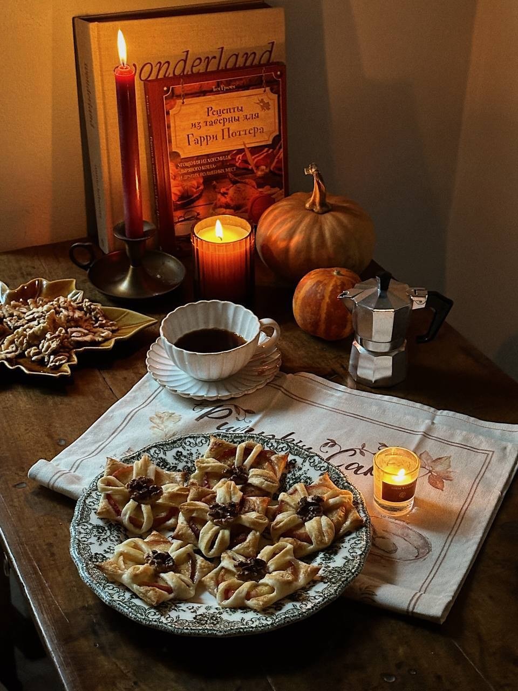
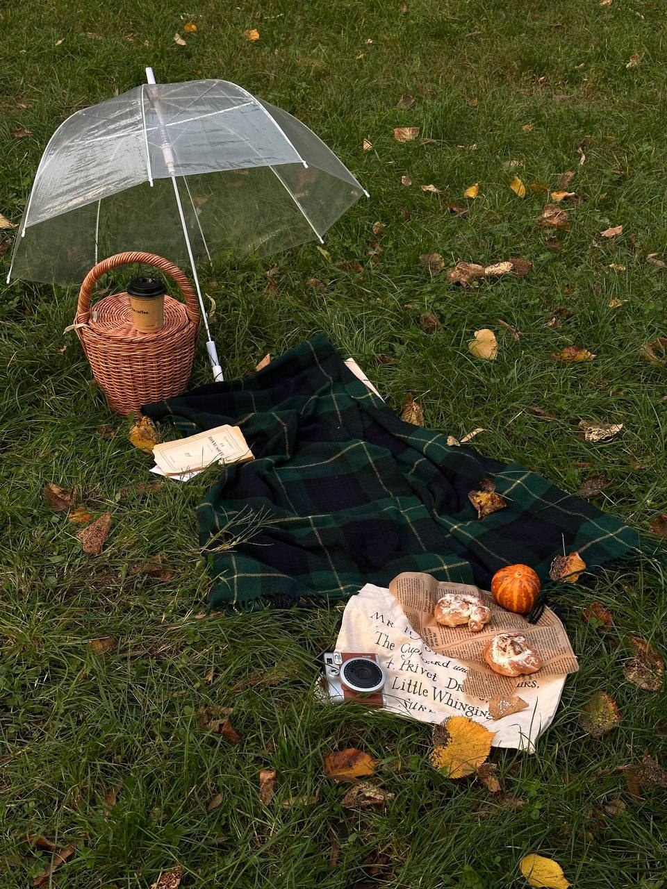
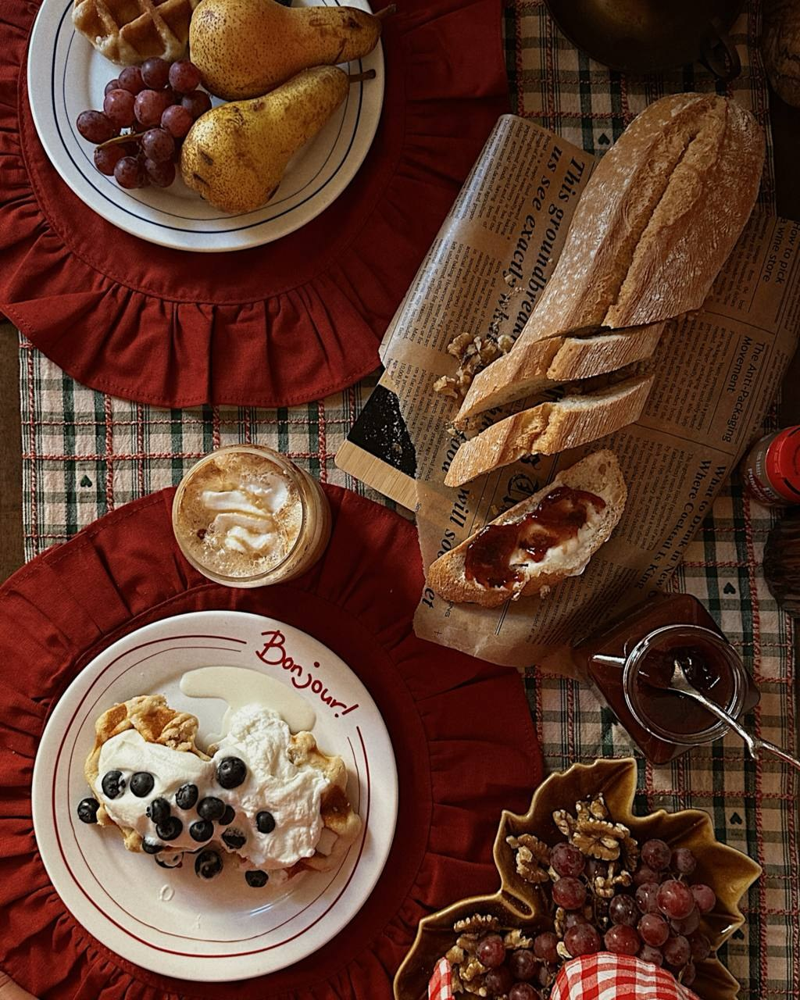
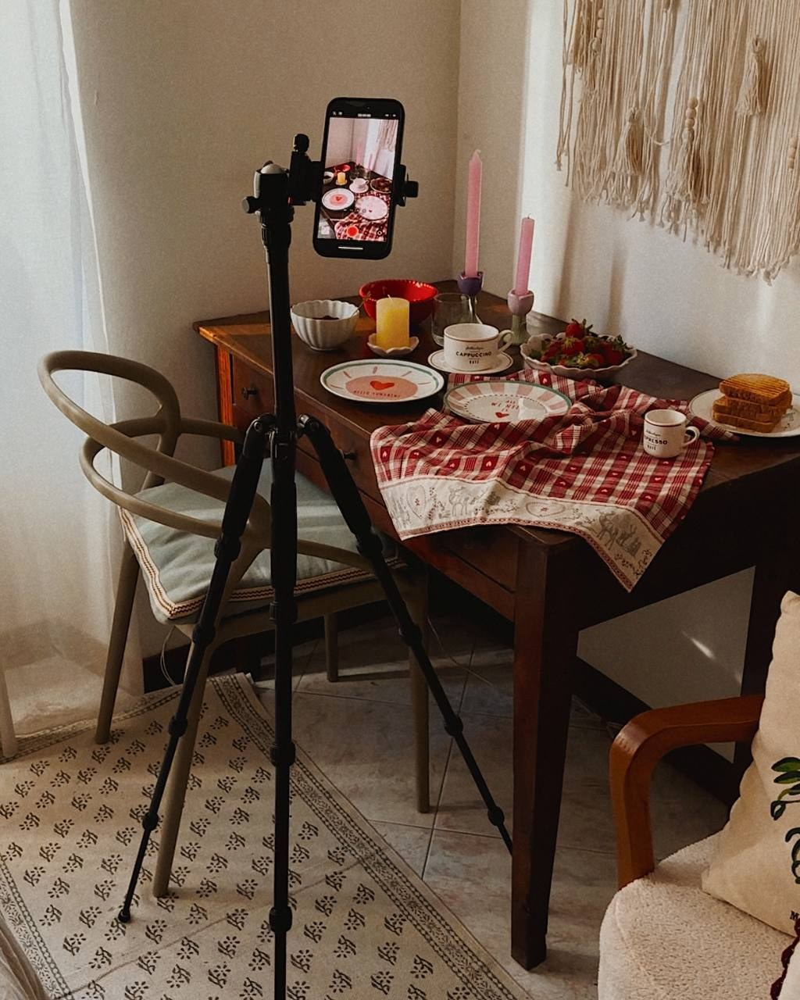
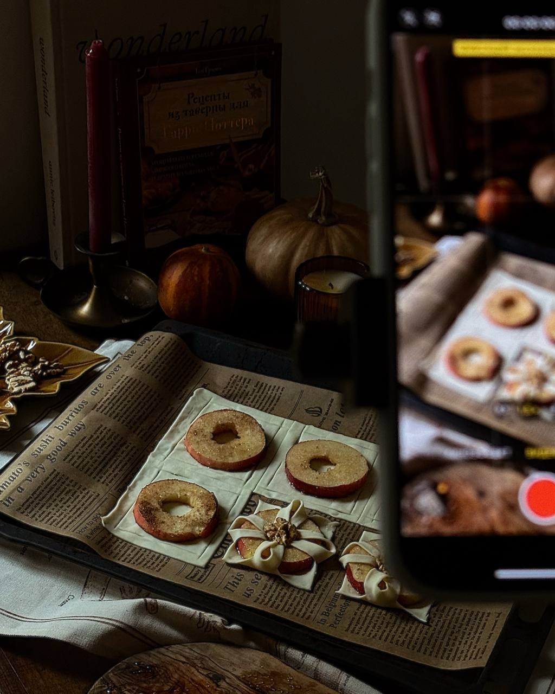
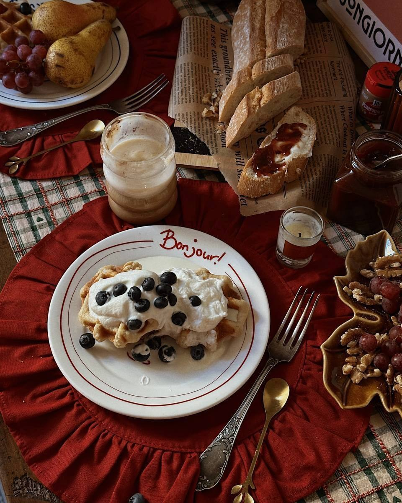

Тирамису в креманках
Быстрый десерт без выпечки с осенним настроением. Три варианта рецепта на выбор и очень эффектная подача.

Марафон контента · by Dasha Zhukova
Марафон по съемке рилз
Снимать. Замедляться.
Замечать красивое.
Интересные, трендовые видео для твоего блога.
Снимаем на смартфон — с удовольствием и без суеты.


счастье в моментеЧуть меньше суеты, чуть больше себя
Создадим интересные, трендовые ролики для твоего блога: попробуем разные форматы, научимся работать со светом, композицией и монтажом. Всё, что понадобится для съёмки, — твой смартфон.
Будем снимать красивые, уютные видео, замедляться, замечать детали и создавать уют вокруг себя — переключаться с повседневных забот на творчество.
А ещё этот марафон — творческая медитация. Время для себя, когда можно увлечься процессом и дать голове отдохнуть.



Шесть видеоуроков и прямой эфир
Рецепт, уютные уголки дома, детали, сборы, beauty-рутины, видеодневник и street. Попробуем разные форматы — и найдём то, что нравится тебе.
Быстрый десерт без выпечки с осенним настроением. Три варианта рецепта на выбор и очень эффектная подача.
Ритуал заботы о себе, уютные уголки дома и немного магии повседневности.
Видеодневник твоей осени: короткие фрагменты дня, наклейки, надписи и плёночные рамки.
Оживим привычные предметы и соберём уютную историю кадр за кадром.
Сборы в стиле романтических комедий 90-х — с настроением любимого кино.
Cinematic Warm Break. Маленькая пауза на скамейке, которую превратим в атмосферное видео.
Встретимся в прямом эфире с автором курса — Дашей Жуковой.

От первого кадра до готового ролика
Я записала подробные видеоинструкции с объяснением каждого действия и каждого кадра. Можно смотреть, повторять и шаг за шагом создавать своё видео — даже если пока не знаешь, с чего начать.
Чтобы почувствовать настроение
Примеры с предыдущих марафонов — чтобы представить, какие видео можно создавать на смартфон.
Из вдохновения — в своё видео
Самое приятное — видеть, как знакомые приёмы складываются в ваши собственные истории.
Листай работы и открывай понравившиеся Reels у авторов. Если Instagram не загрузился, воспользуйся ссылкой под видео.
После наших марафонов
Листай отзывы. Нажми на скриншот, чтобы прочитать крупнее.
Маленький план на эту осень
Шесть сюжетов для твоего блога, подробные видеоуроки и прямой эфир с Дашей Жуковой в Telegram. Будем снимать, пробовать новое и собирать готовые ролики — шаг за шагом, в уютной компании.
В своём темпе, без спешки.
Доступ ко всем урокам остаётся у тебя навсегда. Смотри и снимай, когда удобно, возвращайся к любимым сюжетам — успевать за расписанием не обязательно.
2 100 ₽
Присоединиться